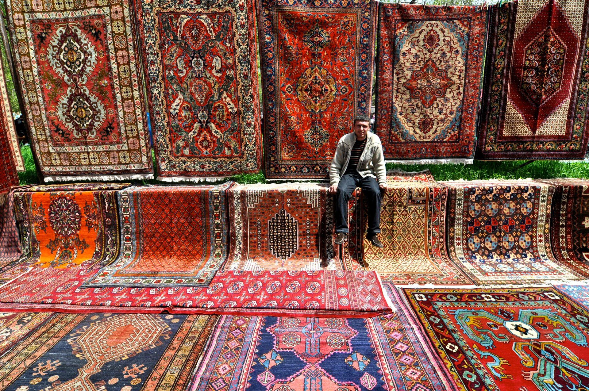

Itinerary
Arrival & Welcome to Yerevan
Meeting at Zvartnots International Airport and transfer to your hotel in Yerevan. Check in and rest after the flight.

Discover Yerevan
Explore the History Museum of Armenia on Republic Square, visit the Yerevan Brandy Factory with a tasting of famous Armenian brandy, stroll through the Vernissage open-air market of arts and crafts, and enjoy a walk around the city centre.
Dinner is optional, on request, and is not included in the tour price.


Garni, Symphony of Stones & Megerian Carpet
Visit Garni, the only preserved Greco-Roman pagan temple in the region, admire the giant basalt columns of the Symphony of Stones in the Garni Gorge, and discover the art of Armenian carpet weaving at Megerian Carpet.

Tsaghkadzor & Lake Sevan
Take a tour of the mountain resort of Tsaghkadzor and ride its ropeway for panoramic views, then continue to Lake Sevan, the “blue pearl” of Armenia. Return to Yerevan in the evening.
Dinner is optional, on request, and is not included in the tour price. The ropeway operates weather permitting.

Departure
Check out from the hotel and transfer to Zvartnots International Airport. Have a safe journey home!